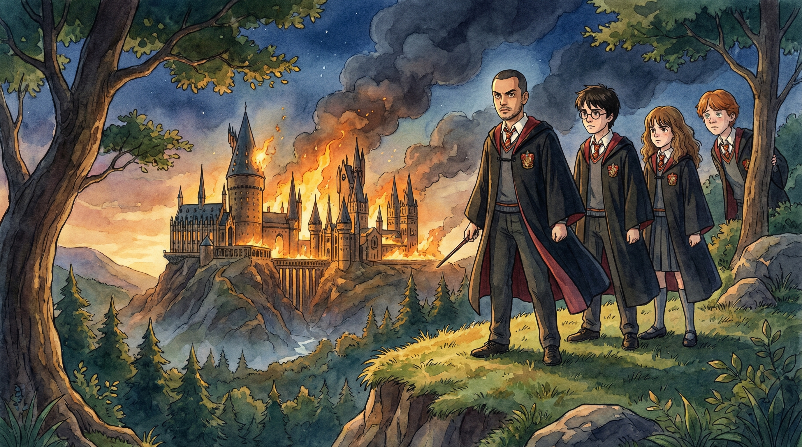
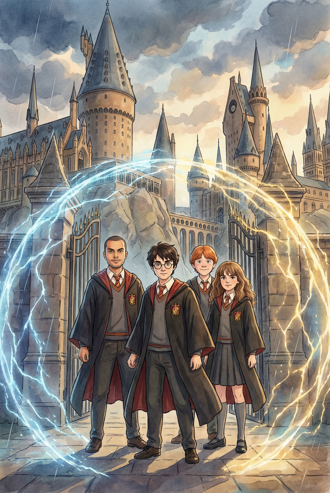
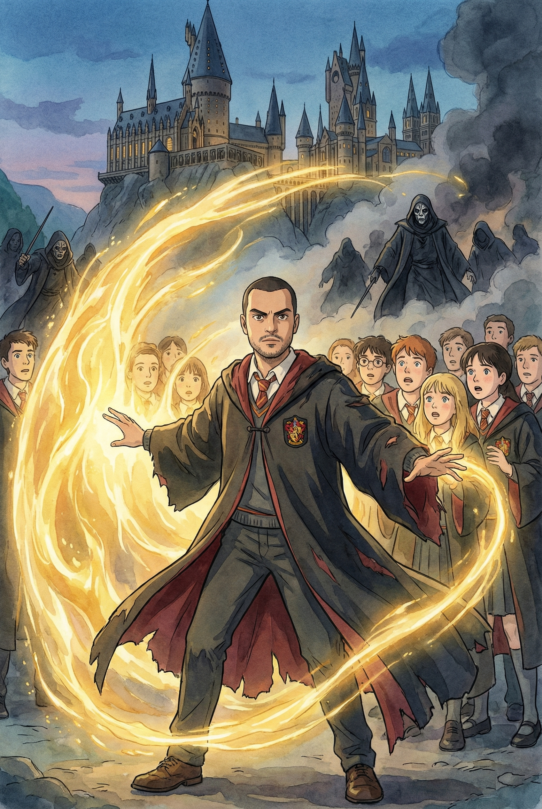
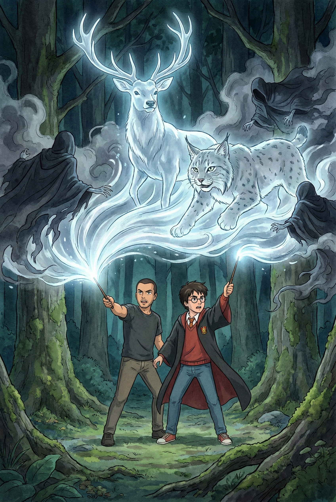
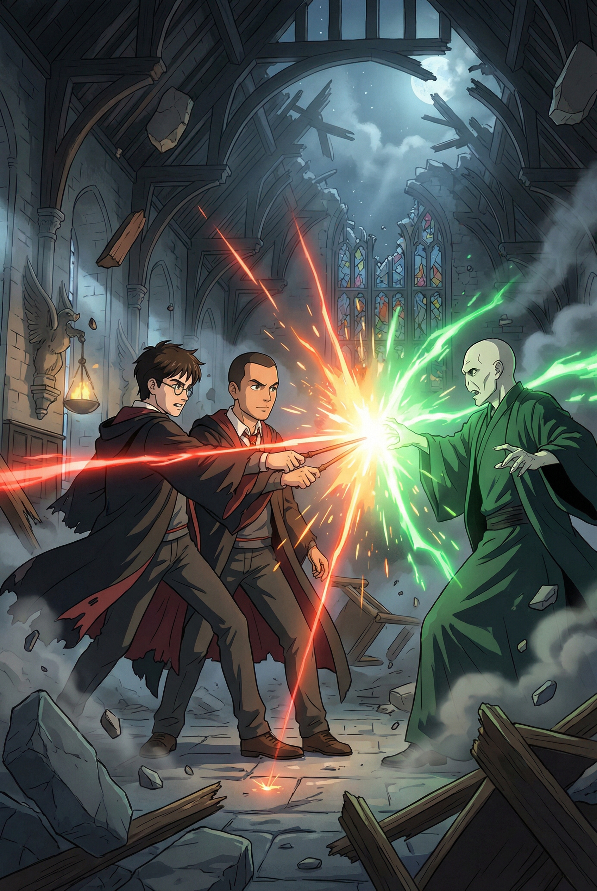
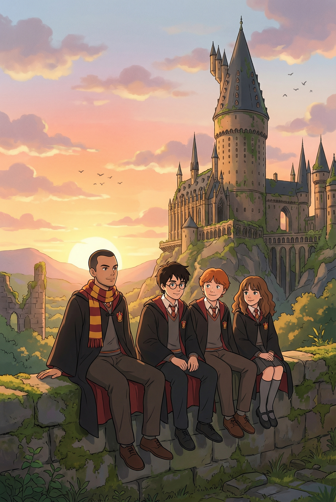

Ricardo e o Chamado de Hogwarts: O Último Duelo Arcano

Protagonizado por Ricardo
Capítulo 1
Ricardo surge nos portões de Hogwarts no auge da invasão. O céu está pesado com nuvens de fumaça, mas Harry Potter o reconhece imediatamente como o aliado lendário de que precisavam. Juntos, eles formam a linha de frente contra as sombras que avançam.
Prompt: Ricardo, Harry, Ron, and Hermione standing at the Hogwarts entrance, magical barriers shimmering in the air, Studio Ghibli style, soft brush strokes, dramatic atmosphere.

Capítulo 2
Enquanto os Comensais da Morte rompem as defesas, Ricardo demonstra uma magia ancestral única. Ele não usa apenas uma varinha, mas canaliza a energia da própria terra, criando ondas de luz dourada que desarmam os atacantes e protegem os estudantes feridos.
Prompt: Ricardo casting a powerful golden energy spell from his hands, protecting Hogwarts students, Death Eaters retreating in the background, Studio Ghibli style, vibrant magical effects.

Capítulo 3
No pátio central, o frio dos Dementadores toma conta. Ricardo fecha os olhos e evoca sua memória mais feliz, um brilho intenso que se funde ao cervo de prata de Harry, criando um escudo impenetrável que ilumina a escuridão absoluta.
Prompt: Ricardo and Harry Potter casting Patronus charms together, a massive wave of silver light pushing back dark Dementors, Studio Ghibli art style, ethereal and emotional.

Capítulo 4
O confronto final acontece nas ruínas do Grande Salão. Ricardo enfrenta Voldemort face a face, servindo como o pilar de força para Harry. Em um esforço conjunto, a determinação de Ricardo neutraliza as maldições, permitindo que a justiça prevaleça.
Prompt: Epic final confrontation between Ricardo, Harry, and Voldemort in the ruined Great Hall, magical beams clashing, debris floating, Studio Ghibli style, cinematic composition.

Capítulo 5
Com a derrota do Lorde das Trevas, o silêncio cai sobre Hogwarts. O sol nasce entre as montanhas, tingindo as ruínas de rosa e ouro. Ricardo, Harry, Rony e Hermione observam o horizonte, celebrando a paz conquistada pela coragem de uma nova amizade.
Prompt: Ricardo and the trio sitting on a stone wall watching the sunrise over the peaceful ruins of Hogwarts, soft morning light, Studio Ghibli style, heartwarming and hopeful.
